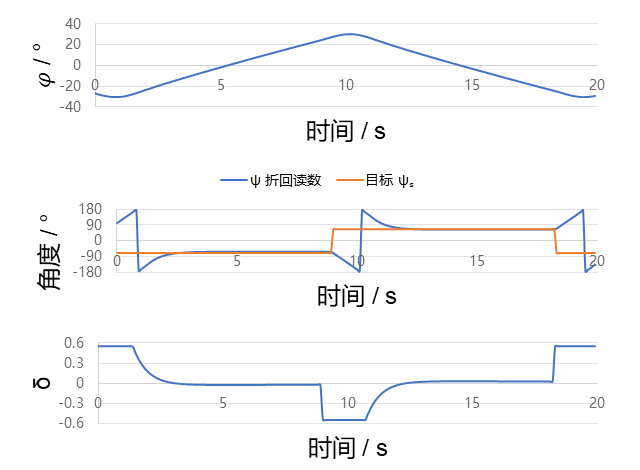
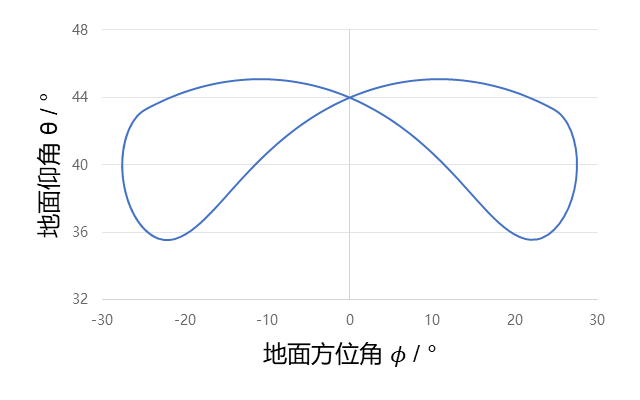

从问题找到依据
前面讲过的内容集中在这里查。第四次汇报重点讲程序怎样控制转弯，以及计算结果说明了什么。
| 想查什么 | 打开内容 | 依据 |
|---|---|---|
| x 和 e_roll 是什么？为什么垂直？ | 符号、约束和 2 + 1 个自由度 | 论文图1与坐标定义 ↗ |
| 两套位置角各指什么？ | 地面参考、风向参考及同一个位置 | 论文式(1) ↗ |
| ψg 和 ψ 为什么不同？ | 圆盘内的同一指针，两套零刻度 | 论文式(6) ↗ |
| ±24° 和 ±66° 分别是什么？ | 何时更换目标、换成哪个目标 | 论文第三节 ↗ |
| δ 是舵机角度还是刹车绳位移？ | 论文定义与本程序归一化方法 | 论文式(7) ↗ |
| 控制程序放在哪里？ | 文件路径、函数名和原始代码行 | 本机程序摘录 |
| 图里的曲线是怎么得到的？ | 固定参数、初始状态和适用范围 | 本次模型计算 |
| 怎样判断真的在上升？ | 由位置求高度，再求高度变化率 | 从论文式(1)出发 ↗ |
论文采用 Erhard & Strauch（2013）的 Sensors and Navigation Algorithms for Flight Control of Tethered Kites。本页中文解释、约束计数和程序对照为汇报整理。论文已有方法、程序设置和本次推导分别标明。
位置向量、机头方向与自由度
是的，x · e_roll = 0 表示这两个非零向量互相垂直。这里 x 沿绳指向风筝，e_roll 沿机头方向。
| 符号 | 准确含义 | 直观理解 |
|---|---|---|
| x | 从系绳点指向风筝的位置向量，长度为 L | 从地面起点指向风筝的箭头 |
| eroll | 机体纵轴的单位向量，沿机头方向 | 圆盘里的机头指针，长度只取 1 |
| ex | 固定坐标系中沿顺风方向的单位向量 | 地面坐标的一根固定轴，与位置向量 x 区分 |
| eyaw | 机体偏航轴方向；本模型约束它沿绳 | 圆盘绕着的轴 |

roll 是机体轴的名称。e_roll 本身是向量，不是滚转角。点乘为零没有说两个向量相等，也没有说它们都为零。

为什么是 2 + 1
| 约束 | 剩下能独立变化的量 |
|---|---|
| 固定绳长、绳绷紧：‖x‖ = L | 位置在球面上，只需两个位置角 |
| 再限定偏航轴沿绳 | 机头在与绳垂直的平面内转动，只需一个朝向角 |
结论仅适用于固定绳长、绳绷紧、偏航轴沿绳的受约束模型。固定绳长这一条本身不会把姿态也减成一个自由度。
两套位置角描述同一个位置，ψg 和 ψ 描述同一个机头方向。因此换一套坐标不会增加自由度。真实软伞形变、绳松弛或自由飞行的模型需要另行讨论。
两套位置角
两套角说的是同一个风筝位置。它们选的参考轴不同，角度读数一般不相等。
| 符号 | 定义 |
|---|---|
| 𝜙、θ | 地面方位角、相对水平面的仰角 |
| 𝜑、ϑ | 绕顺风轴的方位角、绳与顺风轴的夹角 |
| x、y、z 轴 | x 轴顺风，z 轴向下，构成右手坐标系 |

程序变量 varphi 对应 𝜑，vartheta 对应 ϑ。判断 ±24° 条件使用的是 风向参考的 𝜑，不能拿地面方位角 𝜙 的极值来比较。
同一机头方向的两套读数
圆盘和机头都不动，只更换从哪里开始量角度，读数就会改变。

| 读数 | 零刻度 |
|---|---|
| ψg | 向上方向在切平面内的投影 |
| ψ | 逆风方向在切平面内的投影 |


切平面就是风筝所在处、与绳垂直的平面。β 随位置变化，不是新增的机头转动或姿态自由度。投影为零的特殊位置不能用这条投影定义零方向。
±24° 与 ±66° 分别是什么
±24° 用来判断什么时候更换目标。±66° 表示更换后希望机头朝哪个方向。
| 数值 | 比较或设置的对象 | 本次固定参数规则 |
|---|---|---|
| ±24° | 风筝位置角 𝜑 | 位置超出对应界限时，更换目标 |
| ±66° | 目标机头朝向 ψs | 在 +66° 与 −66° 两个目标之间切换 |
论文已有的方法
论文第三节说明：先给正的目标朝向，过一段时间改成负的目标朝向，使风筝转弯并朝另一侧运动。论文在这里没有规定本程序使用的 ±24° 与 ±66° 数值。
打开原文第三节的说明 ↗
本次固定参数计算的具体规则

| 检查前目标 | 当前位置 | 检查后目标 |
|---|---|---|
| +66° | 𝜑 < −24° | −66° |
| −66° | 𝜑 > +24° | +66° |
| 任意 | 其他情况，包括刚好等于界限 | 保持原目标 |
例如当前目标是 +66°，测得位置角 𝜑 = −25°，程序把目标改成 −66°。改的是目标，实际机头和位置仍连续变化。
完整程序的 phi_sw = phi_sw_base * amp_cur 会随工况缩放界限。这里的 ±24° 是当前固定参数复算的设置。
转弯方向与加减 2π
先算目标与实际朝向的角度差，再按程序规则选择转弯方向。加减 2π 改变用于控制的读数。


+228° 表示这一步选择正向转弯。它不表示机头突然跳转，也不保证之后刚好转过 228°。每一步都会重新计算，实际转动还受输入限制和位置变化影响。
这是本程序的控制规则，不能说是论文式(7)–(9)自动给出的控制律。
查看第899–906行和第957–966行转向输入与刹车绳位移
在本程序中，δ 是把刹车绳位移除以最大行程得到的数。b 才是以米计的位移。
| 符号 | 是什么 | 例子或作用 |
|---|---|---|
| ψ | 实际机头朝向 | 随转向方程逐渐变化 |
| ψs | 目标机头朝向 | 当前设成 +66° 或 −66° |
| δ | 归一化转向输入，本程序为 b / s_max | 影响转向项 g vₐ δ |
| b | 实际刹车绳位移，单位 m | 舵机拉动绳子所达到的位置 |
| α | 攻角：翼弦与局部相对来流的夹角 | 影响气动力 |


本程序采用 s_max = 0.20 m，输入指令最大幅值为 0.55，因此目标位移最大为 0.11 m。δ 不是实际机头转过的角度，也不能直接当作舵机轴的转角。实际舵机转角还需要机构尺寸和传动关系。
论文把 δ 称为 steering deflection。这里的归一化、行程和速度参数是本程序的实现约定。
查看执行器参数与更新代码攻角 α
攻角看的是翼弦与局部相对来流的夹角。机头朝向看的是机头在切平面内朝哪个方向。
| 量 | 量哪两个方向之间的角 | 例子 |
|---|---|---|
| 机头朝向 ψ | 机头方向与逆风方向在切平面内的投影 | 从圆盘零刻度量到指针 |
| 攻角 α | 翼弦与局部相对来流 | 从翼型侧面看，来流与弦线夹多少角 |
来流与风筝相对运动有关。即使机头朝向读数没有变，来流或翼型姿态发生变化，攻角也可能变化。因此不能用 ψ 或 δ 的数值直接替代 α。
本次固定参数球面模型采用给定升阻比 E，未独立积分攻角。真实气动模型怎样使用攻角，需要按对应翼型和极线定义。
回查 ψ、ψs、δ、b 的对照 · 论文式(7)–(9)与升阻比 E ↗论文的三条运动方程
δ 先影响机头的转向速度；实际朝向 ψ 再影响两个位置角怎样变化。


| 量 | 含义 |
|---|---|
| g | 转向增益，这里不是重力加速度 |
| vₐ | 空速 |
| L | 绳长 |
| E | 升阻比 |
| 角上的点 | 对时间求导，即这个角每秒变化多少 |
每一步把变化率随时间累加，就能得到新的角度。目标朝向怎样切换、误差怎样限幅由控制程序给出。
查看程序第968–974行对三条方程的实现系统部件与分工
转向吊舱操纵软伞，卷扬发电机收放主绳。程序模型中已经包含相关计算，实际硬件方案仍需确定。
| 部件 | 具体做什么 |
|---|---|
| 软伞 | 产生气动力 |
| 主牵引绳 | 把拉力传到地面 |
| 转向吊舱和舵机 | 改变左右刹车绳，操纵软伞转向 |
| 传感器 | 测量或估计角度、角速度、空速和绳长等 |
| 主控制器 | 根据状态计算目标与操纵输入 |
| 卷扬发电机 | 收放绳并交换能量 |
2013 年论文研究的是牵引风筝系统，其第四节给出传感器配置。地面收放绳发电系统在本汇报中是方案示意，不能据此声称本项目已经完成硬件搭建。
打开论文第四节与传感器表 ↗ · 查看 Python 控制程序实际高度怎样变化
判断上升或下降，要看实际高度 h 的变化率。只看 cos ψ 的正负不够。


前面的高度关系来自论文位置式。最后一步求导并代入，是本次汇报补充展开的推导。
反例：𝜑 = 0°、ϑ = 60°、ψ = 80°、E = 5、vₐ = 24 m/s。虽然 cos ψ > 0，仍有 ḣ ≈ −2.07 m/s，表示正在下降。
上述求导假设 L 固定。如果绳长变化，还要加入绳长变化对高度的贡献。
曲线的条件与结果
这是给定参数下的模型计算，不是实飞数据。目标改变后，机头需要时间转弯，所以位置还会继续变化。
| 项目 | 本次固定参数 |
|---|---|
| 模型 | L = 260 m，vₐ = 24 m/s，E = 5，g = 0.13 m⁻¹ |
| 控制 | ψsw = 66°，𝜑sw = 24°，Kp = 0.55，|δ| ≤ 0.55 |
| 初始状态 | 𝜑 = 0°，ϑ = 43.75°，ψ = 63.11°，初始目标 +66° |
| 时间 | 步长 0.02 s，计算 80 s，图中显示最后 20 s |
| 计算方法 | RK4 积分，每 0.1 s 取样显示 |
| 执行器 | 本组曲线直接采用 δ = δ_cmd，未加入舵机滞后 |

±24° 是更换目标的位置条件。这组计算中的风向参考位置角 𝜑 大约到 ±30.3° 才返回。地面方位角 𝜙 的极值约为 ±27.6°，它属于另一套坐标，不能混用。

完整工程程序还考虑变化的绳长、空速、升阻比和执行器状态。这里的固定参数曲线不能直接等同于完整工程程序输出，也不证明任意初始条件都稳定。
回查什么时候更换目标 · 回查如何判断上升或下降程序文件与逐行对照
所说的程序是 soft_kite_groundgen.py，核心函数为 _integrated_closed()，从第782行开始。
本机文件位置
D:/虚拟C盘/导师/黄伟希/AWES复刻/计算程序/awes/architectures/soft_kite_groundgen.py
下面保留与汇报直接相关的代码行及原行号。网页不运行仿真。程序参数和控制规则是当前实现，不能因为代码注释提到论文，就把所有参数都算作论文原值。
| 代码范围 | 对应问题 |
|---|---|
| 第805–815行 | 目标朝向、位置界限和执行器参数 |
| 第891–906行 | 检查位置、换目标、计算误差和输入 |
| 第948–974行 | 更新执行器并计算三条运动方程 |
参数
805 # 控制与模型参数（Erhard & Strauch 2013）806 gk = 0.13807 kp = 0.55808 dmax = 0.55809 psi_cmd_rad = np.deg2rad(66.0)810 phi_sw_base = np.deg2rad(24.0)811 stroke_m = 0.20812 rate_mps = 0.25813 tau_s = 0.10814 eta_servo = 0.70815 aspect = 5.0更换目标和计算转向指令
891 # 外环：过界切换目标朝向 ψ_s892 amp_cur = w_shape * 1.0 + (1.0 - w_shape) * max(float(reset_amp), 0.35)893 phi_sw = phi_sw_base * amp_cur894 if target_sign > 0 and varphi < -phi_sw:895 target_sign = -1.0896 elif target_sign < 0 and varphi > phi_sw:897 target_sign = 1.0898899 psi_s = target_sign * psi_cmd_rad900 e_psi = _wrap_angle(psi_s - psi)901 if target_sign < 0 and psi > 0 and e_psi < 0:902 e_psi += 2.0 * np.pi903 elif target_sign > 0 and psi < 0 and e_psi > 0:904 e_psi -= 2.0 * np.pi905906 d_cmd = float(np.clip(kp * e_psi, -dmax, dmax))907 delta_need[i] = kp * e_psi908 delta[i] = brake_pos / stroke_m if stroke_m > 0 else d_cmd909 brake_m[i] = brake_pos执行器和运动方程
948 if i + 1 < n:949 dt_total = float(time_s[i + 1] - time_s[i])950 n_sub = max(1, int(np.ceil(dt_total / 0.02)))951 dt_sub = dt_total / n_sub952 for _ in range(n_sub):953 if target_sign > 0 and varphi < -phi_sw:954 target_sign = -1.0955 elif target_sign < 0 and varphi > phi_sw:956 target_sign = 1.0957 psi_s_sub = target_sign * psi_cmd_rad958 e_sub = _wrap_angle(psi_s_sub - psi)959 if target_sign < 0 and psi > 0 and e_sub < 0:960 e_sub += 2.0 * np.pi961 elif target_sign > 0 and psi < 0 and e_sub > 0:962 e_sub -= 2.0 * np.pi963 d_sub = float(np.clip(kp * e_sub, -dmax, dmax))964 v_srv = float(np.clip((d_sub * stroke_m - brake_pos) / tau_s, -rate_mps, rate_mps))965 brake_pos = float(np.clip(brake_pos + v_srv * dt_sub, -stroke_m, stroke_m))966 delta_eff = brake_pos / stroke_m if stroke_m > 0 else d_sub967968 def _rhs(st):969 vp_s, vt_s, ps_s = st970 vt_c = float(np.clip(vt_s, np.deg2rad(8.0), np.deg2rad(82.0)))971 dvt = (va_eff / max(ell, 1.0)) * (np.cos(ps_s) - np.tan(vt_c) / glide_e)972 dvp = -(va_eff / (max(ell, 1.0) * np.sin(vt_c))) * np.sin(ps_s)973 dps = gk * va_eff * delta_eff + dvp * np.cos(vt_c)974 return np.array([dvp, dvt, dps], dtype=float)程序摘录日期：2026-11-16。后续如果程序改变，请同步更新本页行号和参数。